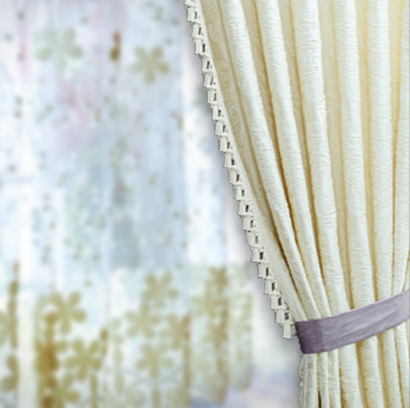

Floral curtains are a top pick for homes that want instant style without heavy renovation costs. In Bangladesh, they’re everywhere. From compact city apartments to spacious family houses, you can use it anywhere because of its affordability, versatility, and visual uplift.
If you’re searching for floral curtain prices in Bangladesh, here’s the real breakdown: prices vary by fabric, print quality, size, lining, and whether you go ready-made or custom. At Curtivelle we offer high-quality fabric material with top-notch service at the best price possible.
Call for CurtainsWhat affects floral curtain price
Floral curtain prices don’t jump randomly; it’s all about what you choose. The fabric, print quality, size, and finishing details directly decide how much you’ll pay. Once you understand these factors, you can control the budget instead of getting surprised at checkout. Here’s what actually moves the number.
- Fabric quality: Cotton and polyester are wallet-friendly. Linen blends, velvet touches, and imported fabrics push prices up but feel richer and last longer.
- Print method: Digital prints cost more but look sharper and fade less. Screen prints are cheaper and more traditional.
- Curtain size & length: Standard windows are cheaper. Floor-length or extra-wide panels cost more—simple math.
- Lining & blackout backing: Adding lining can raise prices by 30–60%, but you gain privacy, heat control, and better drape.
- Customization: Ready-made saves money. Custom stitching costs more but fits perfectly and looks cleaner.
Types of Floral Curtains in Bangladesh
In Bangladesh, floral curtains come in multiple styles to match different rooms, budgets, and lifestyle needs. From light and airy designs to heavy blackout options, each type serves a clear purpose. Choosing the right one means balancing looks, privacy, and practicality.
Sheer Floral Curtains
Lightweight, airy, and great for daylight. Best for living rooms or layered with heavier curtains.
Cotton Floral Curtains
Breathable and comfortable, ideal for warm climates. Balanced price and durability.
Polyester Floral Curtains
Low maintenance and budget-friendly. Good color retention and wrinkle resistance.
Blackout Floral Curtains
Function meets fashion. Perfect for bedrooms where light control and privacy matter.
Luxury Floral Curtains
Premium fabrics, refined prints, custom pleats. If you want a statement, this is it.
How to choose the right floral curtains
Choosing the right floral curtains is about more than just liking a pattern. It’s about fit, function, and flow. The right fabric, color, and print can make a room feel bigger, brighter, and more balanced. Get this part right, and your whole space levels up without extra spending. Follow this and you’ll be fine.
Room size & lighting: Small rooms look better with light colors and smaller floral prints, which keep the space open. Large rooms can handle bold patterns without feeling crowded.
Purpose of the room: Bedrooms need privacy and light control, so lined or blackout floral curtains work best. Living rooms can go lighter with sheer or semi-sheer florals.
Fabric choice: Cotton is breathable and comfortable for daily use, especially in warm weather. Polyester is easier to maintain and holds color longer.
Color coordination: Match floral colors with your wall paint and furniture for a balanced look. Clashing colors make the room feel messy, not stylish.
Curtain length & fit: Floor-length curtains create a more elegant, premium appearance. Poorly measured curtains ruin the look, no matter how good the fabric is.
Maintenance & durability: If you want low effort, choose fabrics that resist wrinkles and fading. High-quality prints and proper lining help curtains last longer.
Buy floral curtains from Curtivelle
If you want floral curtains that actually look premium and last, Curtivelle is the smart move. We don’t just sell curtains—we guide you through the entire process. We provide all types of curtains available in Bangladesh, including style-based, interior-based, and seasonal curtains. Here are some key points why we stand out from others:
- Wide range of floral fabrics and patterns
- Custom sizing for a perfect fit
- Optional lining and blackout solutions
- Professional curtain consultancy
- Clean stitching, modern finishing, zero shortcuts
FAQ about floral curtain
What is the average floral curtain price in Bangladesh?
Most floral curtains cost between BDT 1,000 and BDT 4,500 per window, depending on fabric and lining.
Are floral blackout curtains expensive?
They cost more than regular curtains, but the added privacy and light control make them worth it.
Which fabric is best for floral curtains?
Cotton for comfort, polyester for low maintenance, and lined fabrics for luxury and durability.
Do floral curtains fade over time?
High-quality digital prints fade much slower, especially with proper lining.
Is it better to buy ready-made or custom floral curtains?
Ready-made saves money. Custom gives a perfect fit and a cleaner, more premium look.